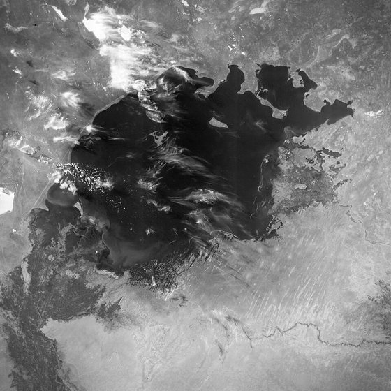
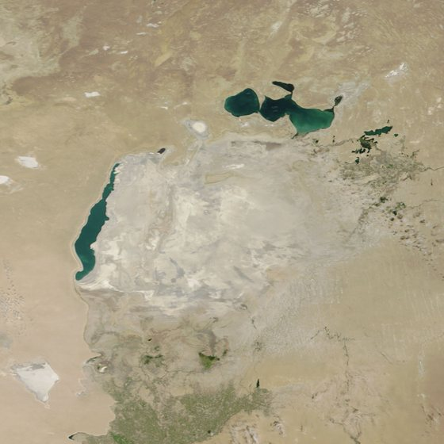

Script
Ready
Bấm vào slide để bắt đầu...
Âm Thanh
Ready


Sáu mươi hai năm,
một vùng biển
biến mất
1964
Trước
Hồ lớn thứ tư thế giới
Biển Aral, giữa Kazakhstan và Uzbekistan
Đã làm gì
Nước bị lấy đi để trồng bông
- 1Chuyển dòng Amu Darya và Syr Darya, hai con sông nuôi hồ
- 2Dẫn nước đi tưới bông trên đất khô Uzbekistan
- 3Hệ thống tưới rò rỉ, mất thêm nước dọc đường
Bắt đầu từ thập niên 1960 và kéo dài hàng chục năm.
2026
Sau
Mất khoảng 90% lượng nước
Hồ vỡ thành bốn vũng rời nhau
Trước và sau
100%1964 · đầy nước
~10%2026 · còn lại
Phần phía bắc đang quay lại
2005đập Kok-Aral dài 13 km
giữ nước lại cho phần bắc
giữ nước lại cho phần bắc
Năm 2025 lượng nước phần bắc tăng 42%.
1/6